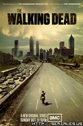

THE WALKING DEAD
LIZBETH RAMIREZ DE LA CRUZ
ESPARCIMIENTO DEL VIRUS
Géneros: Ciencia ficción, Terror
Subgéneros: Cómic, Futuro postapocalíptico, Gore, Zombis
Duración: 45 min aprox por episodio
Sinópsis: The Walking Dead nos lleva a un mundo donde una plaga de zombies ha convertido a la humanidad en una especie en peligro de extinción. Allí, el sheriff Rick Grimes (Andrew Lincoln) deberá tratar de encontrar a su familia, luego de pasar más de un mes en coma y despertar en un mundo devastado.

octubre(31/10/2010)-
diciempre (05/12/2010)